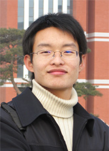

向前，向生命更深处
尊敬的各位领导、老师，亲爱的同学们：
大家下午好，首先要感谢你们的聆听！也要感谢学校、党委学生工作部（学生处）把十分宝贵的理想与成才报告团名额给了我，以及对我的长期培养、持存关怀、悉心指导，使我有机会和条件在这里言说与分享。
虽然我第一个发言，但我想说同身旁几位精英才俊相比，我只能代表一种平凡的成长，也只能尽力言说一段成长的平凡。
大家下午好，首先要感谢你们的聆听！也要感谢学校、党委学生工作部（学生处）把十分宝贵的理想与成才报告团名额给了我，以及对我的长期培养、持存关怀、悉心指导，使我有机会和条件在这里言说与分享。
虽然我第一个发言，但我想说同身旁几位精英才俊相比，我只能代表一种平凡的成长，也只能尽力言说一段成长的平凡。
站在理想与成才的讲台上，分享一段关于成长的事，更多的愿望是致敬时代的伟大，谢忱母校的培养，怀想亲友的陪伴，以及感受理想和信仰的力量。大学生活即将结束，站在结尾处的分享，不该仅仅是事情讲述本身，我想还应该包括对成长问题的反思和生命意义的寻获。这让我想起苏格拉底曾说过，“一种未经审视的生活还不如没有的好”，谏言人们学会智慧、反思生活、认清自己、觉解意义。对此，我国的孔圣人要求更高，“吾日三省吾身”，一天要反省三次，而且每次都用三件具有标格意义（“为人谋而不忠乎？与朋友交而不信乎？传不习乎？”）的事来反省审视自己。很多人都习惯日记，会不会正是遵循先哲面对自己生活的审慎风范和深刻教诲。
说到这里，我想起一位室友来，印象中他就能日记千言。总会在一些特别的日子里，经常看到他站在阳台上面对苍茫天际呆若木鸡或者说悠远思虑，继而怅然落座奋笔疾书，终于把自己写得热泪满面、挠头蹙眉又灰飞烟灭，最后把日记本密码锁上，拂去烟尘、抖擞长衣，转身走进飘摇风中，留给我们诸多惊艳叫绝的深度空白。也许这就是审视生活、日省吾身的当代典范吧。很遗憾，后来他离开了我们，有说转学异地，有说投笔从戎，有说闯荡四方，总之没了音讯，现在想来那时的天好蓝路好远，转眼已流年，希望他能过得好吧。
说远了，我就是想说如果“是否经历成长”能够作为一种审视省思自己生活的向度，那么今天站在理想与成才讲台上的讲述与分享才能获得意义。因为在我的理解中，每个经历四年，生活二十多年的年轻人，都是意义的缔造者，都是成长的故事会，一经审视和提取，都会获得可供讲述与分享的故事和意义。只是此刻在这里，我们几个同学恰巧被举荐为不同层面的成长代表，缩影了我们年级全体同学奋斗拼搏的集体写照，通过自我解剖的方式首先向大家敞开自己的生命旅程，不关乎荣耀，只关乎成长。
但是任何真正意义上的成长都是艰难的，不同成长不同阶段所面临的艰难又不同，尽管你未曾当真甚至也没影响我们笑对人生乐在其中，但是任何严肃地成长都需要理性地认清这个前提，成长总是要经历打击、苦闷和拼搏的。正是这些艰难构成了人们生命运动中的客观节点，它的客观在于人们总会遇到，区别在于你什么时候遇到，你以怎样的情态遇到，以及你遇到了多少。成长的真正获取就是藐视艰难，快乐地冲破险阻，确信生命的坦途，把点连接成线，扩及成面，激活生命，勾勒人生，构筑人生的意义与亮色，洞悉向前、向生命更深处的透彻。
一
第一个故事需要我们回到四年前那个深秋的绿茵场。秋高气爽、天宇湛蓝、景致美胜，追梦的心灵天马行空，追球的少年脚下如风。 不过好景不长啊，跳起争头球落地时脚底打滑摔倒了，摔严重了，我的右手带着对足球强烈而疯狂的爱骨折了，这下可跑不动了。虽是队长，球队也正在晋级，但伤筋动骨一百天啊，没办法只能惜别绿茵场，暂时退出足坛了，真糟糕。但更糟糕的是治愈骨折的大笔花销成了问题，一是家里给的钱开学都交付各种费用了，二是实在难以因为踢球骨折这种玩耍事跟家里再伸手，这种事讲都不能讲的。还好我们的辅导员老师看出困难替我申请学校资助才解了燃眉之急。我也由此意识到实现经济自立自足的重要性，便琢磨兼职挣钱。做什么兼职呢？做家教普通话不好容易误人子弟，发传单没那么多时间挣得还少不愿干，最后成了“票贩子”。 大家会以为我加入“黄牛党”倒卖火车票，其实不是，我“倒卖”的是长影世纪城的门票。当时长影刚开园，很多人不了解，没有人做这个，长影也没打开校园市场。这是我在公交车上看着长影的广告想着的，为了当好第一个吃螃蟹的人，我直接坐车到了终点站去跟长影市场部经理谈合作，让大学生半价入园，薄利多销。达成合作意向后，我借了三千元，买回二十张门票在校园里卖。本来对这笔生意本来很有信心的，可没想到半多个月下来，一张都没卖出去。眼看门票快过期又不能退，我心里发起了慌，分析问题所在：一是当年就120元的价格来说对于大学生来讲确实偏高，二是宣传不到位，大家对长影的游玩价值心存疑虑，混淆了长影制片厂和长影世纪园，身边也很少有人体验过这种娱乐游玩模式。对于没有去玩过的东西而言价格是确实高了点儿，但我不能降价出售，因为跟长影有协议，怎么办呢，这买卖要砸手里了。 我躺在床上想得头疼，最后琢磨出一个没有办法的好办法：手绘了大量海报继续攻关，托人在每个寝室楼物色了1-2名同学，这些同学都有游玩的热情，同时也都能说会道、善于宣传。总共组织了19人，算上我20人，欢天喜地“免费”游长影去了。免费之所以要加引号，是因为不是真的免费，而是允许先游玩，觉得好再交费，不好玩就不要钱。 风险当然有，但效果非常好。一进园我就有底了，那时的长影确实棒，体验后大家都说好，我也是第一次全程感受各种观影特效，大家不仅补上了票款，还在我的商机示意和鼓动下加入了销售队伍，成为每个寝室楼的宣传员和分售点。这下大家既有了体验感受，又有了销售热情和动力，可以说是一下就逆转了宣传销售颓势。同学们对长影愈加了解，买票的人越来越多，代售团队不断壮大，扩大宣传攻势，策划新方案，游长影蔚然成风，市场越做越大，扩及整个大学城，曾一度做到了吉林省的校园销售总冠军。不过由于我们是利润均分不搞剪刀差，加之我放弃了大学城校园独家代售权（之前我和长影是签订了独家代售协议的，但是后来有不少人提出要分售我也同意了），事实上也没挣到多少钱，但毕竟开阔了视野、激活了思维、灵感了想象、缔结了情谊、增进了信心，兄弟们能一起喝几碗酒好吃几顿肉，也挺好的。 尽管上大学挣钱不是最主要的，但我在其中领受了成就，它作为成长的一种考量使我坚信，人只要有头脑有力量到哪都不怕，不管何种境地都不至于走投无路，关键在于有没有探寻前方风景的心。事实上，对于青春年少，能想到就能做到，我们的双脚完全可以追上理想的心，假若有个上天在负责安排，那么你就负责精彩吧。
二
想来这些信心与勇气，其实都是生活所迫，都是发轫于对初心的坚持。人生会不会就是，力量往往都深藏内心，就看你什么时候真正聆听了它的声音，什么时候真正发挥了它的能量。青春的大学生活容易迷惘，迷惘会困苦追梦的心，能否走出这种迷惘获得清晰的目标，决定着大学生活品质的基本成色。 从大一下学期开始，很多个从图书馆看书后出来的夜晚，看着路灯下雪花飘飞，看着路上行人匆匆，我都会问自己：大学要怎么过，要学什么，要成为一个怎样的人，我想要怎样的成长。学习当然是第一位的，可我的专业学习之路却是那么一波三折。 我现在是法学学士，但不瞒大家说，三年前，我改过行。那时很单纯，法律学习中繁杂的概念和晦涩的法理消解着我对专业的热爱初衷，加上当时看来法学专业不算理想的就业前景，迷乱了我对专业的情愫和规划，最后因循兴趣转投了中文系。 也许只有真的放弃了，我才发现自己对法学多么眷恋。文学院很好，但我依然迷失。我总注意到新闻里报道农民工不懂法被欺诈的消息，拼死拼活地工作，到头来连回家路费都拿不到，却往往无可奈何，甚至走上绝路，以至于要总理帮着讨要报酬。每个学法律的人，都是有着法治中国理想的人。就算是满腔热血吧，当初我报考大学之所以只选法学专业，就是想用法律武器捍卫弱势群体的正当权益，为法治的中国社会做出微薄贡献。 可我却背离了这个初心。我不该向未来妥协的，不该向困难低头的，不就是一些抽象的范畴嘛，不就是一堆繁杂的法条嘛？只要头脑不笨，只要时间用够，都能拿下，关键我头脑不笨啊，时间也那么一大把。未来的就业前景能说明什么？只要足够优秀，就不会找不到好工作。我如果不能学习自己最有可能为之奉献一生的事业，大学还有什么意义？道理其实不难，但偏偏要放弃后才能真切懂得。 所以我心意已决，转回法学。当然，转回法学的过程也是相当艰难的，险些退学重考，在此不表。不过，我真的很感谢学校，感谢老师，真是尊重的教育，包容我，给我“浪子回头”的机会。自此之后，我心如磐石，不再动摇，以课堂为中心认真听课，以图书馆为阵地广泛阅读，以实践为平台深入探索。四年下来，我收获了国家奖学金、校长奖学金、东师奖章，并以拔尖专业成绩保送硕士研究生。 懂点法律的人都愿意到实践生活中去运用，就像平时很爱帮人咨询那样，其实未必多懂，就是有一颗善治良法的闪闪红心罢了，学以致用才能彰显知识的力量。大四实习，我十分幸运地进入了东北地区最好的律师所，并被选拔为主任律师法务助理。期间，我全程参与办理了一起农民工劳资纠纷案件。无论是一遍一遍地诉状拟稿，还是一次次地卷宗审阅，我都心若神圣、竭尽全力、务求最好。还记得二审的前一天，已是深夜，我还奔走在异城清凉的大街小巷，寻找几个当事人调查取证。到现在都忘不了我在半夜街头连续喝掉的那三碗热腾腾的豆腐脑，以及阿姨对我追求正义报答社会的夸赞而坚决不要钱。豆腐脑不贵，但人心珍贵。当我马不停蹄地赶回长春时，天已大亮。尽管一夜没睡，但开庭在即，我也只能在火车上用凉水草草洗把脸，下车边打车边啃面包，向法院匆匆赶去。当法官宣判了我们的胜诉，当工人们都领到了属于自己的血汗钱，作为一个学有所用的法律人，我觉得一切都那么值。大家知道一共多少钱吗？两百万。
三
讲到这里，好像已经说了很多。有时候我会想，人的成长会不会像种子的力量，从小种下什么，慢慢就会长成什么。还好不是这样，人生虽然前因后果，但不是前定和宿命的，人生是可以养成和塑造的，可以掌握在自己及时代手中的。至于人生在自己手中多还是掌握在时代手中多，就看自己是否掌握时代的精深之处了。因此我真心觉得成长是多方面要素合力集成的，自己努力固然重要，机遇与平台同样重要，但是如何把机遇与平台转化为努力的优势则更重要，机遇就像上天赠予的礼物，如果你不是准备好了双手，你不会获得。 此时此刻我想起我的母亲在我十八岁写给我的一句话：“作为男孩子，人生中有两个道理你要谨记，一是不要因为钱权高看人，不要因为貌美多看人，不要因为势弱小看人，应当志存高远、抱朴守拙，二是人生中有各种缘要经历，但是没有人是应该对你好的，对你不好也是应该和常有的，因而对你好的人要用心惜受和真心感恩。”我的父母对我从小家教甚严，家族祖训也传，但小时候极为叛逆，没听进去几句话，做过不少糊涂捣蛋事，挨了不少棒揍仍难进益，但母亲的这两句话却触及心灵，每每念想无不有耳提面命之感效。 即将毕业，我很感激大学四年来所历经的一切成长，更感激陪伴这些成长的亲友老师和同窗。可能正是这种情愫，使得当初学校决定成立爱心使者团时，我那么一见倾心、情投意合。爱心使者团是我大学生活不能跳过的回忆，并非因其多么绚丽多彩，仅仅因为它那么真切可感，那种真切贯穿我的大学全部，那份可感融入我的内心世界，它让我明白热爱一种生活、追逐一段梦想需要怎样的态度和付出，尽管我走马上任首届团长时还只是个大一男孩，但只要心中有力量就会无惧风雨。 还记得我们在学校老师指导下创办的爱心使者团第一个公益品牌——爱心超市，也就是今天的爱心驿站。为什么做爱心超市呢，因为传统的上台领受式的爱心捐赠遭遇了尴尬，需要更人性化的爱心传递模式。学校经过研究决定采用超市卖场的形式，设想开办一个超市把募集到的爱心物资“卖”给学生，而所谓的“卖”其实是让学生用虚拟货币来购买，实质上就是赠送。只是这样“一买一卖”就避免了面对面地爱心尴尬。这在当时是个创意，也就是个观念，并没有看到哪家高校尝试过，所以老师决定让我们大胆做一次。我和团队坚信，“没人做过的更要做，咱们做了就是第一，做好了那就是唯一。” 我努力用不断完善的策划和渐渐明朗的行动感染团队，凝聚信任，顶着巨大压力开始了从无到有的尝试。而过程也真的很难，方案不周全，人手不够，外联打不开局面，有人生病，有人累倒，这一切都无时无刻不在考验着这个新生团队的团结和智慧，信心与坚强。有一天，我们辛辛苦苦清洗消毒完毕的衣服正在晾晒，天却突然下起了雨。尽管我们奋力抢收，但是衣服太多，雨太大，很多已经快干的衣服还是被大雨打湿了。我们自己也被打湿了，从头到脚都在淌水，雨水，汗水，以及女孩的泪水。没有办法，我只得把衣服分配到人，让每人都抱上一些衣物，抱回宿舍去晾干、熨平…… 就这样，我们前前后后忙了整整一个月，爱心超市取得开业大吉，场面异常火爆，4000多件衣服鞋帽，2000多袋方便面，1000多张学习卡，500多把雨伞被“抢购”一空——爱心超市瞬间火爆东师，美誉广传，引来众多媒体争相报道，被誉为“史上最牛的超市”。 我在前面提到的那位传奇室友站在阳台上面对蓝天吃完了我们爱心超市的泡面，对我说，“你们这个事我看很好，以后要志愿者叫上我。”真是莫大的鼓励啊！直到今天我还感怀，那时候每次办爱心超市，我们都要招募许多志愿者，我们班几乎“全员充军”，动辄就达百人之多，图书馆和食堂更是经常被征用的场所，保卫处的老师们每次都主动前来维持秩序。所以我觉得，爱心真是人世界最为普遍的共识性精神力量，关键在于如何发挥爱心之力，爱心不能浪费、枯竭更不能伤害。 爱心超市创业初成极大地推动了爱心使者团走响公益品牌运作的实力之路。之后，在老师的信任和安排下，我连任了校区团长，升任总团长，负责爱心使者团两个校区的工作，在学校战略决策和资金投入下，陆续开创爱心学校、爱心服务社、爱心影院、自强论坛等品牌，融归爱心驿站，担任站长，爱心驿站也很快成为学校资助育人工作的一张新名片。在这过程中，学校、老师以及伙伴们付出了很多，和一群有爱的人在一起倍感幸福。 从大一到大三，爱心使者团既是我感恩的平台，也是我磨砺素质、提升能力、收获友朋、感悟成长的家园。上报上电视也好，当选公益创业人物也好，评选长春市十佳大学生也好，都不重要，重要的是能助人以好，能不负学校期望和老师培养，能实现朋辈成长。爱心使者们总是追求公益和学习两不误，每人每年都能至少获得一等奖学金，最厉害的一年是团队共获得10个国家奖学金，创造了轰动一时的“爱心使者团现象”。如今，大家或者升入理想学府、或者择优高就，都拥有了最美好的前程，东师爱心事业也在日益响亮。 当毕业的离歌响起，会须一饮三百杯，长风破浪会有时，直挂云帆济沧海……
四
前年盛夏，我独自远行，经过三天两夜的火车，到了青藏高原，看到了源头处清澈的黄河水，凭吊天来之水滚滚而去，领略了高原明镜青海湖，感触了虔诚于心朝圣路。夜里，与牧羊老者围坐篝火旁，听着群狼连嚎，喝着青稞酒，说起从前，说起很久以前。 而现在，我也仿佛再一次攀上了雪山之巅，放眼天空海阔，无限豪情尽揽胸怀。所有彷徨蹉跎，所有荣辱过往，都在一瞬间被苍鹰带走飞远，回荡心涧的是成长的信仰与力量，以及那句古老箴言：向前，向生命的更深处。 再一次感谢党的政策，学校的培养，学生处、资助管理中心、政法学院等单位领导与老师给予我的帮助和引导，感谢在最美年华遇到的同伴！
谢谢，祝大家幸福！
一
第一个故事需要我们回到四年前那个深秋的绿茵场。秋高气爽、天宇湛蓝、景致美胜，追梦的心灵天马行空，追球的少年脚下如风。 不过好景不长啊，跳起争头球落地时脚底打滑摔倒了，摔严重了，我的右手带着对足球强烈而疯狂的爱骨折了，这下可跑不动了。虽是队长，球队也正在晋级，但伤筋动骨一百天啊，没办法只能惜别绿茵场，暂时退出足坛了，真糟糕。但更糟糕的是治愈骨折的大笔花销成了问题，一是家里给的钱开学都交付各种费用了，二是实在难以因为踢球骨折这种玩耍事跟家里再伸手，这种事讲都不能讲的。还好我们的辅导员老师看出困难替我申请学校资助才解了燃眉之急。我也由此意识到实现经济自立自足的重要性，便琢磨兼职挣钱。做什么兼职呢？做家教普通话不好容易误人子弟，发传单没那么多时间挣得还少不愿干，最后成了“票贩子”。 大家会以为我加入“黄牛党”倒卖火车票，其实不是，我“倒卖”的是长影世纪城的门票。当时长影刚开园，很多人不了解，没有人做这个，长影也没打开校园市场。这是我在公交车上看着长影的广告想着的，为了当好第一个吃螃蟹的人，我直接坐车到了终点站去跟长影市场部经理谈合作，让大学生半价入园，薄利多销。达成合作意向后，我借了三千元，买回二十张门票在校园里卖。本来对这笔生意本来很有信心的，可没想到半多个月下来，一张都没卖出去。眼看门票快过期又不能退，我心里发起了慌，分析问题所在：一是当年就120元的价格来说对于大学生来讲确实偏高，二是宣传不到位，大家对长影的游玩价值心存疑虑，混淆了长影制片厂和长影世纪园，身边也很少有人体验过这种娱乐游玩模式。对于没有去玩过的东西而言价格是确实高了点儿，但我不能降价出售，因为跟长影有协议，怎么办呢，这买卖要砸手里了。 我躺在床上想得头疼，最后琢磨出一个没有办法的好办法：手绘了大量海报继续攻关，托人在每个寝室楼物色了1-2名同学，这些同学都有游玩的热情，同时也都能说会道、善于宣传。总共组织了19人，算上我20人，欢天喜地“免费”游长影去了。免费之所以要加引号，是因为不是真的免费，而是允许先游玩，觉得好再交费，不好玩就不要钱。 风险当然有，但效果非常好。一进园我就有底了，那时的长影确实棒，体验后大家都说好，我也是第一次全程感受各种观影特效，大家不仅补上了票款，还在我的商机示意和鼓动下加入了销售队伍，成为每个寝室楼的宣传员和分售点。这下大家既有了体验感受，又有了销售热情和动力，可以说是一下就逆转了宣传销售颓势。同学们对长影愈加了解，买票的人越来越多，代售团队不断壮大，扩大宣传攻势，策划新方案，游长影蔚然成风，市场越做越大，扩及整个大学城，曾一度做到了吉林省的校园销售总冠军。不过由于我们是利润均分不搞剪刀差，加之我放弃了大学城校园独家代售权（之前我和长影是签订了独家代售协议的，但是后来有不少人提出要分售我也同意了），事实上也没挣到多少钱，但毕竟开阔了视野、激活了思维、灵感了想象、缔结了情谊、增进了信心，兄弟们能一起喝几碗酒好吃几顿肉，也挺好的。 尽管上大学挣钱不是最主要的，但我在其中领受了成就，它作为成长的一种考量使我坚信，人只要有头脑有力量到哪都不怕，不管何种境地都不至于走投无路，关键在于有没有探寻前方风景的心。事实上，对于青春年少，能想到就能做到，我们的双脚完全可以追上理想的心，假若有个上天在负责安排，那么你就负责精彩吧。
二
想来这些信心与勇气，其实都是生活所迫，都是发轫于对初心的坚持。人生会不会就是，力量往往都深藏内心，就看你什么时候真正聆听了它的声音，什么时候真正发挥了它的能量。青春的大学生活容易迷惘，迷惘会困苦追梦的心，能否走出这种迷惘获得清晰的目标，决定着大学生活品质的基本成色。 从大一下学期开始，很多个从图书馆看书后出来的夜晚，看着路灯下雪花飘飞，看着路上行人匆匆，我都会问自己：大学要怎么过，要学什么，要成为一个怎样的人，我想要怎样的成长。学习当然是第一位的，可我的专业学习之路却是那么一波三折。 我现在是法学学士，但不瞒大家说，三年前，我改过行。那时很单纯，法律学习中繁杂的概念和晦涩的法理消解着我对专业的热爱初衷，加上当时看来法学专业不算理想的就业前景，迷乱了我对专业的情愫和规划，最后因循兴趣转投了中文系。 也许只有真的放弃了，我才发现自己对法学多么眷恋。文学院很好，但我依然迷失。我总注意到新闻里报道农民工不懂法被欺诈的消息，拼死拼活地工作，到头来连回家路费都拿不到，却往往无可奈何，甚至走上绝路，以至于要总理帮着讨要报酬。每个学法律的人，都是有着法治中国理想的人。就算是满腔热血吧，当初我报考大学之所以只选法学专业，就是想用法律武器捍卫弱势群体的正当权益，为法治的中国社会做出微薄贡献。 可我却背离了这个初心。我不该向未来妥协的，不该向困难低头的，不就是一些抽象的范畴嘛，不就是一堆繁杂的法条嘛？只要头脑不笨，只要时间用够，都能拿下，关键我头脑不笨啊，时间也那么一大把。未来的就业前景能说明什么？只要足够优秀，就不会找不到好工作。我如果不能学习自己最有可能为之奉献一生的事业，大学还有什么意义？道理其实不难，但偏偏要放弃后才能真切懂得。 所以我心意已决，转回法学。当然，转回法学的过程也是相当艰难的，险些退学重考，在此不表。不过，我真的很感谢学校，感谢老师，真是尊重的教育，包容我，给我“浪子回头”的机会。自此之后，我心如磐石，不再动摇，以课堂为中心认真听课，以图书馆为阵地广泛阅读，以实践为平台深入探索。四年下来，我收获了国家奖学金、校长奖学金、东师奖章，并以拔尖专业成绩保送硕士研究生。 懂点法律的人都愿意到实践生活中去运用，就像平时很爱帮人咨询那样，其实未必多懂，就是有一颗善治良法的闪闪红心罢了，学以致用才能彰显知识的力量。大四实习，我十分幸运地进入了东北地区最好的律师所，并被选拔为主任律师法务助理。期间，我全程参与办理了一起农民工劳资纠纷案件。无论是一遍一遍地诉状拟稿，还是一次次地卷宗审阅，我都心若神圣、竭尽全力、务求最好。还记得二审的前一天，已是深夜，我还奔走在异城清凉的大街小巷，寻找几个当事人调查取证。到现在都忘不了我在半夜街头连续喝掉的那三碗热腾腾的豆腐脑，以及阿姨对我追求正义报答社会的夸赞而坚决不要钱。豆腐脑不贵，但人心珍贵。当我马不停蹄地赶回长春时，天已大亮。尽管一夜没睡，但开庭在即，我也只能在火车上用凉水草草洗把脸，下车边打车边啃面包，向法院匆匆赶去。当法官宣判了我们的胜诉，当工人们都领到了属于自己的血汗钱，作为一个学有所用的法律人，我觉得一切都那么值。大家知道一共多少钱吗？两百万。
三
讲到这里，好像已经说了很多。有时候我会想，人的成长会不会像种子的力量，从小种下什么，慢慢就会长成什么。还好不是这样，人生虽然前因后果，但不是前定和宿命的，人生是可以养成和塑造的，可以掌握在自己及时代手中的。至于人生在自己手中多还是掌握在时代手中多，就看自己是否掌握时代的精深之处了。因此我真心觉得成长是多方面要素合力集成的，自己努力固然重要，机遇与平台同样重要，但是如何把机遇与平台转化为努力的优势则更重要，机遇就像上天赠予的礼物，如果你不是准备好了双手，你不会获得。 此时此刻我想起我的母亲在我十八岁写给我的一句话：“作为男孩子，人生中有两个道理你要谨记，一是不要因为钱权高看人，不要因为貌美多看人，不要因为势弱小看人，应当志存高远、抱朴守拙，二是人生中有各种缘要经历，但是没有人是应该对你好的，对你不好也是应该和常有的，因而对你好的人要用心惜受和真心感恩。”我的父母对我从小家教甚严，家族祖训也传，但小时候极为叛逆，没听进去几句话，做过不少糊涂捣蛋事，挨了不少棒揍仍难进益，但母亲的这两句话却触及心灵，每每念想无不有耳提面命之感效。 即将毕业，我很感激大学四年来所历经的一切成长，更感激陪伴这些成长的亲友老师和同窗。可能正是这种情愫，使得当初学校决定成立爱心使者团时，我那么一见倾心、情投意合。爱心使者团是我大学生活不能跳过的回忆，并非因其多么绚丽多彩，仅仅因为它那么真切可感，那种真切贯穿我的大学全部，那份可感融入我的内心世界，它让我明白热爱一种生活、追逐一段梦想需要怎样的态度和付出，尽管我走马上任首届团长时还只是个大一男孩，但只要心中有力量就会无惧风雨。 还记得我们在学校老师指导下创办的爱心使者团第一个公益品牌——爱心超市，也就是今天的爱心驿站。为什么做爱心超市呢，因为传统的上台领受式的爱心捐赠遭遇了尴尬，需要更人性化的爱心传递模式。学校经过研究决定采用超市卖场的形式，设想开办一个超市把募集到的爱心物资“卖”给学生，而所谓的“卖”其实是让学生用虚拟货币来购买，实质上就是赠送。只是这样“一买一卖”就避免了面对面地爱心尴尬。这在当时是个创意，也就是个观念，并没有看到哪家高校尝试过，所以老师决定让我们大胆做一次。我和团队坚信，“没人做过的更要做，咱们做了就是第一，做好了那就是唯一。” 我努力用不断完善的策划和渐渐明朗的行动感染团队，凝聚信任，顶着巨大压力开始了从无到有的尝试。而过程也真的很难，方案不周全，人手不够，外联打不开局面，有人生病，有人累倒，这一切都无时无刻不在考验着这个新生团队的团结和智慧，信心与坚强。有一天，我们辛辛苦苦清洗消毒完毕的衣服正在晾晒，天却突然下起了雨。尽管我们奋力抢收，但是衣服太多，雨太大，很多已经快干的衣服还是被大雨打湿了。我们自己也被打湿了，从头到脚都在淌水，雨水，汗水，以及女孩的泪水。没有办法，我只得把衣服分配到人，让每人都抱上一些衣物，抱回宿舍去晾干、熨平…… 就这样，我们前前后后忙了整整一个月，爱心超市取得开业大吉，场面异常火爆，4000多件衣服鞋帽，2000多袋方便面，1000多张学习卡，500多把雨伞被“抢购”一空——爱心超市瞬间火爆东师，美誉广传，引来众多媒体争相报道，被誉为“史上最牛的超市”。 我在前面提到的那位传奇室友站在阳台上面对蓝天吃完了我们爱心超市的泡面，对我说，“你们这个事我看很好，以后要志愿者叫上我。”真是莫大的鼓励啊！直到今天我还感怀，那时候每次办爱心超市，我们都要招募许多志愿者，我们班几乎“全员充军”，动辄就达百人之多，图书馆和食堂更是经常被征用的场所，保卫处的老师们每次都主动前来维持秩序。所以我觉得，爱心真是人世界最为普遍的共识性精神力量，关键在于如何发挥爱心之力，爱心不能浪费、枯竭更不能伤害。 爱心超市创业初成极大地推动了爱心使者团走响公益品牌运作的实力之路。之后，在老师的信任和安排下，我连任了校区团长，升任总团长，负责爱心使者团两个校区的工作，在学校战略决策和资金投入下，陆续开创爱心学校、爱心服务社、爱心影院、自强论坛等品牌，融归爱心驿站，担任站长，爱心驿站也很快成为学校资助育人工作的一张新名片。在这过程中，学校、老师以及伙伴们付出了很多，和一群有爱的人在一起倍感幸福。 从大一到大三，爱心使者团既是我感恩的平台，也是我磨砺素质、提升能力、收获友朋、感悟成长的家园。上报上电视也好，当选公益创业人物也好，评选长春市十佳大学生也好，都不重要，重要的是能助人以好，能不负学校期望和老师培养，能实现朋辈成长。爱心使者们总是追求公益和学习两不误，每人每年都能至少获得一等奖学金，最厉害的一年是团队共获得10个国家奖学金，创造了轰动一时的“爱心使者团现象”。如今，大家或者升入理想学府、或者择优高就，都拥有了最美好的前程，东师爱心事业也在日益响亮。 当毕业的离歌响起，会须一饮三百杯，长风破浪会有时，直挂云帆济沧海……
四
前年盛夏，我独自远行，经过三天两夜的火车，到了青藏高原，看到了源头处清澈的黄河水，凭吊天来之水滚滚而去，领略了高原明镜青海湖，感触了虔诚于心朝圣路。夜里，与牧羊老者围坐篝火旁，听着群狼连嚎，喝着青稞酒，说起从前，说起很久以前。 而现在，我也仿佛再一次攀上了雪山之巅，放眼天空海阔，无限豪情尽揽胸怀。所有彷徨蹉跎，所有荣辱过往，都在一瞬间被苍鹰带走飞远，回荡心涧的是成长的信仰与力量，以及那句古老箴言：向前，向生命的更深处。 再一次感谢党的政策，学校的培养，学生处、资助管理中心、政法学院等单位领导与老师给予我的帮助和引导，感谢在最美年华遇到的同伴！
谢谢，祝大家幸福！